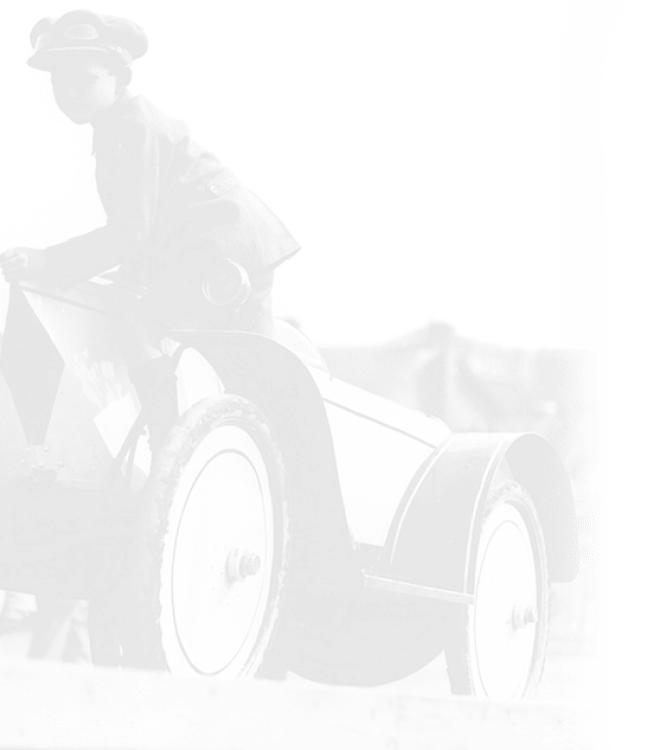
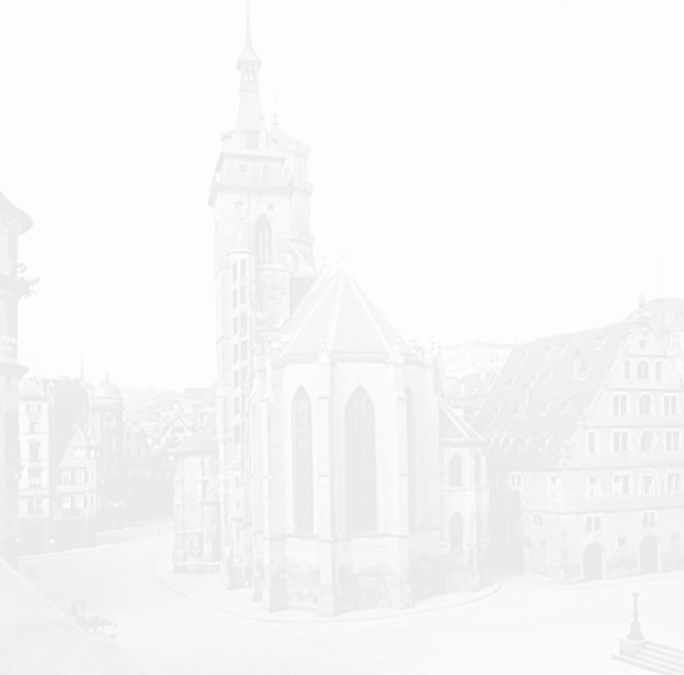
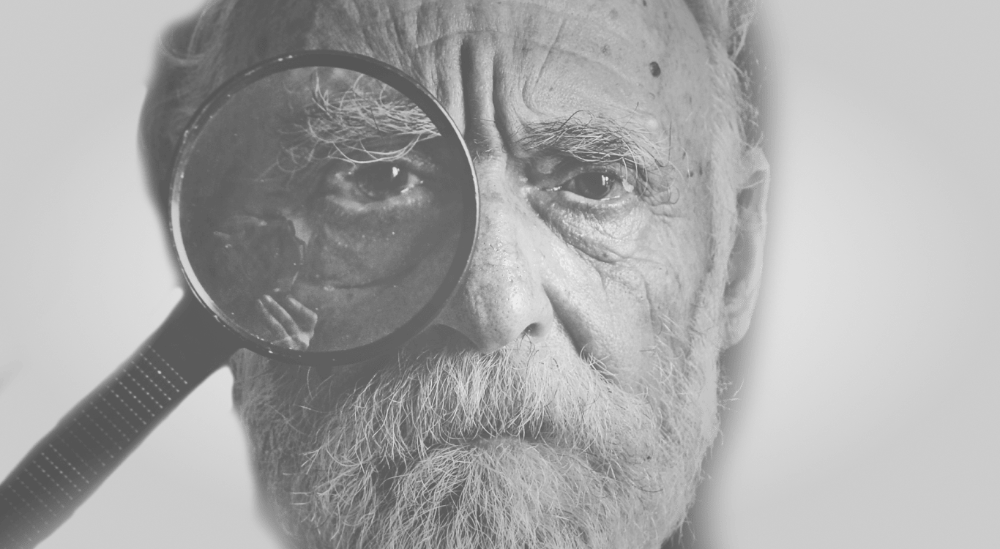
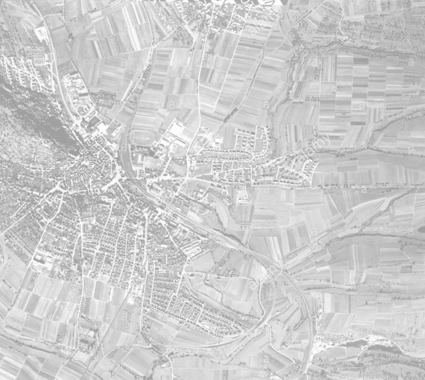
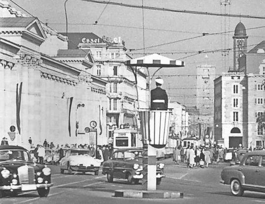
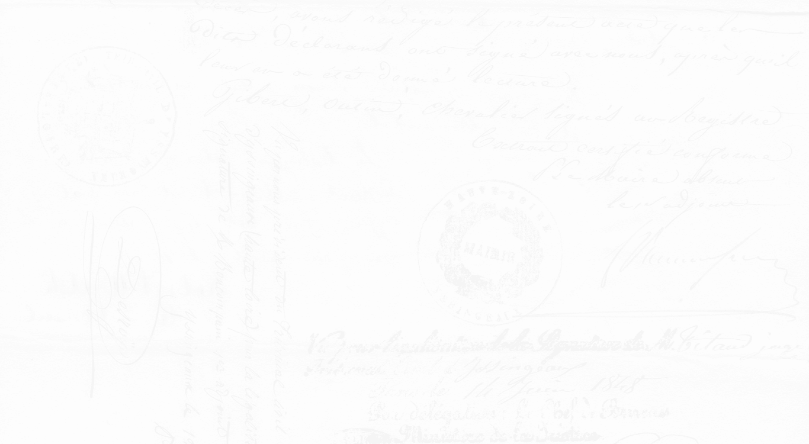

It all started in 1958 in Zuffenhausen,
in the northern suburbs of Stuttgart.
Chapter 1
The man
  When

It’s in the heart of Germany’s
“Creative Power”,
with the highest
concentration of
scientists in the country,
that Eckhard Marks was
born.
Where
 Go to Chapter 2